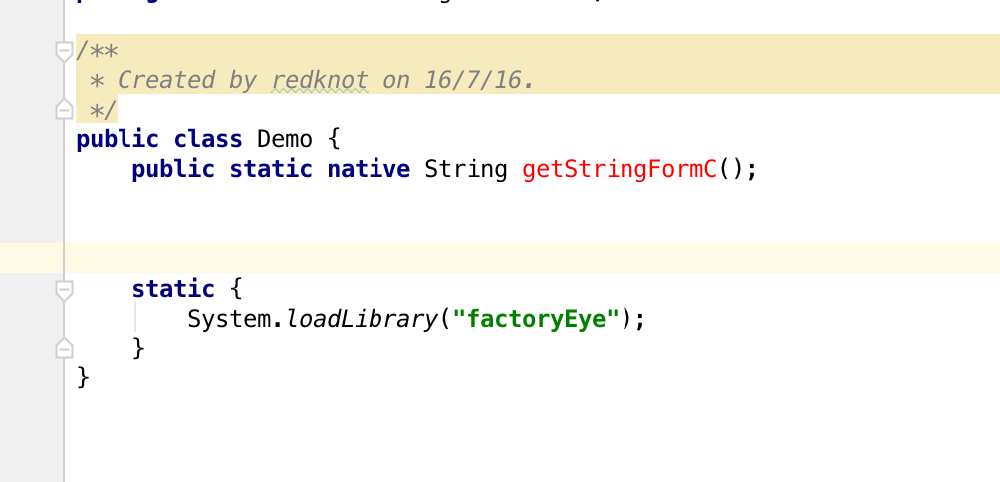
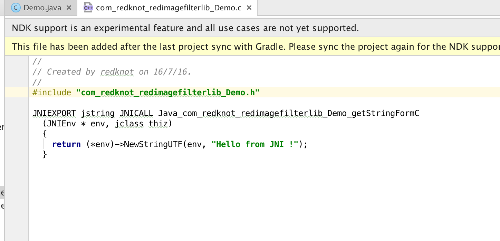
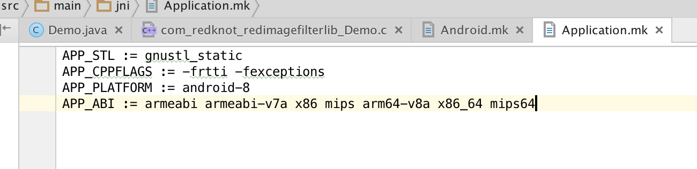
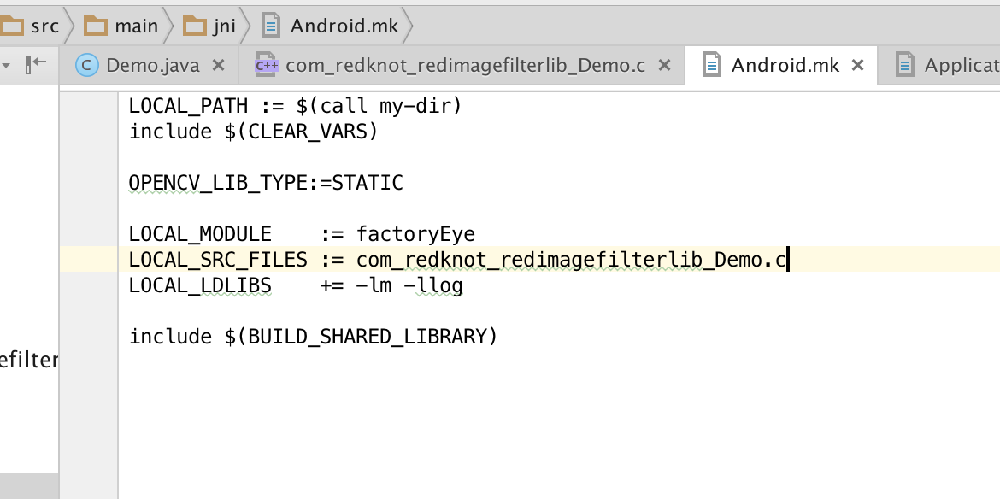
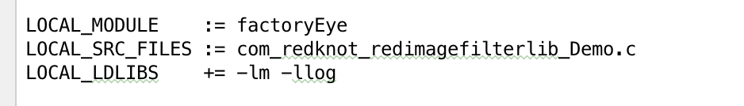

其实网上的教程并不算少数，但是！都不好使。
对于一天到晚写 Java 代码的 Android 程序员来说，突然让他写 C++ ，确实需要我这篇博客。
所谓 NDK ，无非就是一个嵌入式平台的交叉编译器，把 C++ 代码编译成手机平台可以运行的库，让 Java 通过 JNI 调用。
1,写原生方法，在 Java 代码中写一个 native 方法，如下图的 getStringFromC() 方法，这个方法是调用原生方法的入口。

2,根据这个方法，生成对应的头文件。可以使用 Java 提供的 javah 命令
javah -jni com.redknot.redimagefilterlib.Demo
3,将生成的 .h 文件拷贝到 src/main/jni 文件夹之下（没有 jni 自己建立一个）4,在 jni 文件夹下面建立 .c 文件，引入刚才建立的 .h 文件，实现里面的方法。

5,在 jni 下建立 Application.mk 文件，这个文件里面是给编译器看的，说明了目标平台，C++ 的版本等信息，不明白的可以先按照我这个来

6,在 jni 下建立 Android.mk 文件，这个文件也是给编译器看的

目前来说，重要的是这三行

第一行是编译成模块的模块名称
第二行是要参与编译的源文件
第三行是要引入的库